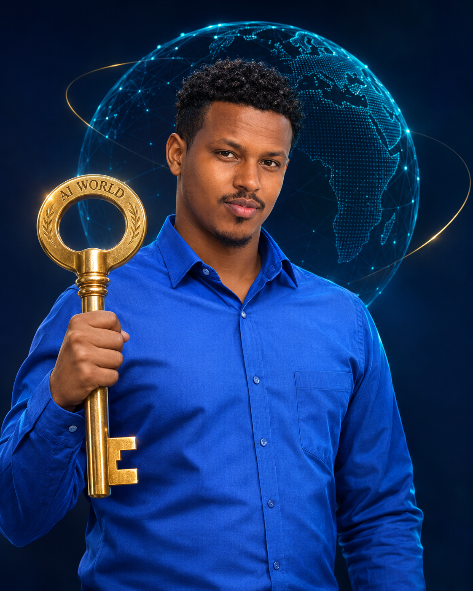

THE HUMAN BEHIND THE AI
Building ideas into reality
Nuur Macalin
Isaaq Caddow.
Software Developer × AI Explorer
A conversation with NuurAI
A little curiosity. A lot to discover.
Your personal guide to NuurDemo mode
LET'S START SOMETHING
A place to start
01 / A LITTLE CONTEXT
Thoughtful code.
Real-world impact.
I'm a developer at Raed Innovation ICT and co-founder of Mudnaan Technology. I build practical software, reliable APIs, and useful digital systems — with a growing curiosity for what AI makes possible.
See what I'm building02 / MY TOOLKIT
Built with experience.
Driven by curiosity.
Python & FastAPIPHP / CodeIgniter 4MySQL / SQLModelFlutter & DartDjango fundamentalsLLMs & RAGQdrantGenerative AI
Currently exploring AI agents and intelligent systems
2.5+Years building software
2024University graduate
DeveloperRaed Innovation ICT
Co-founderMudnaan Technology